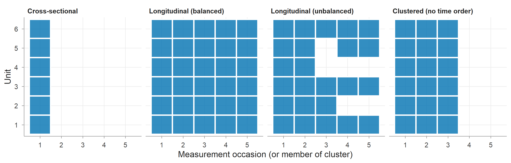
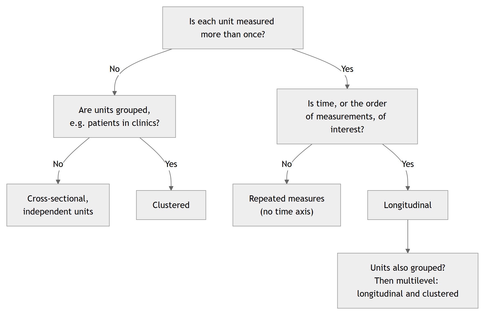
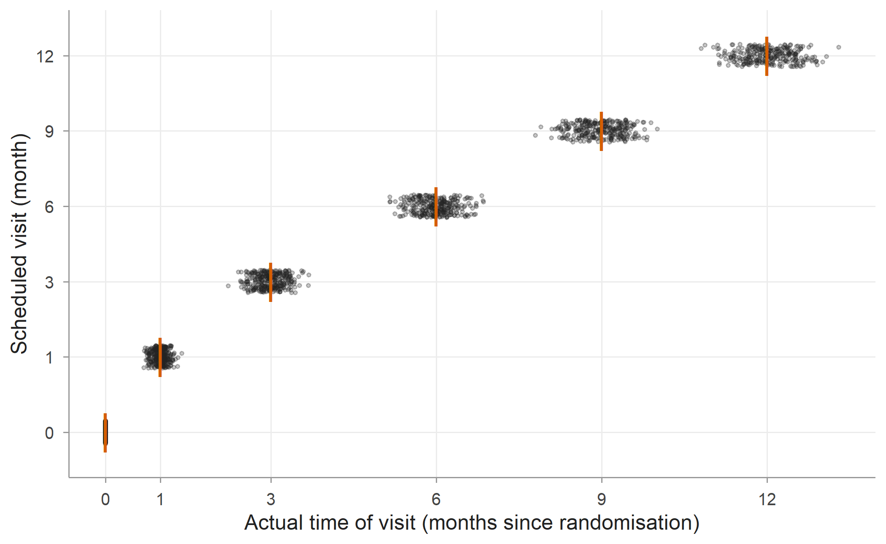
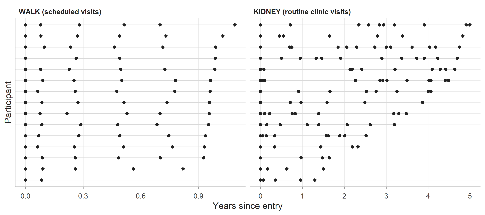
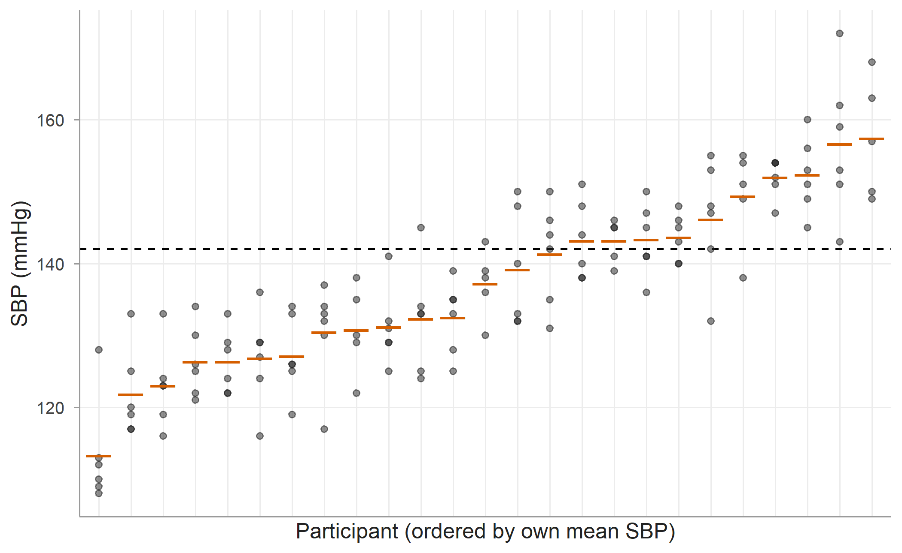
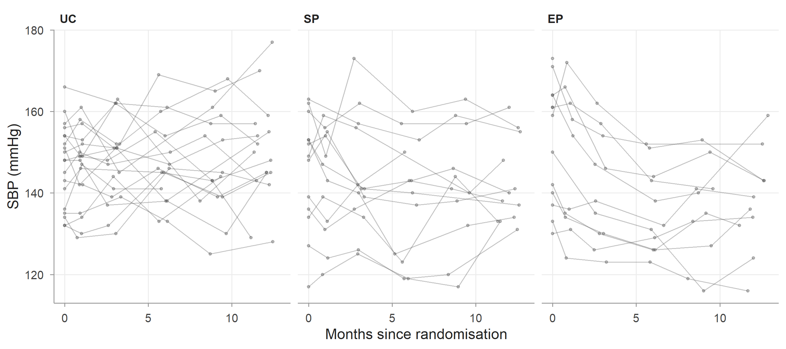
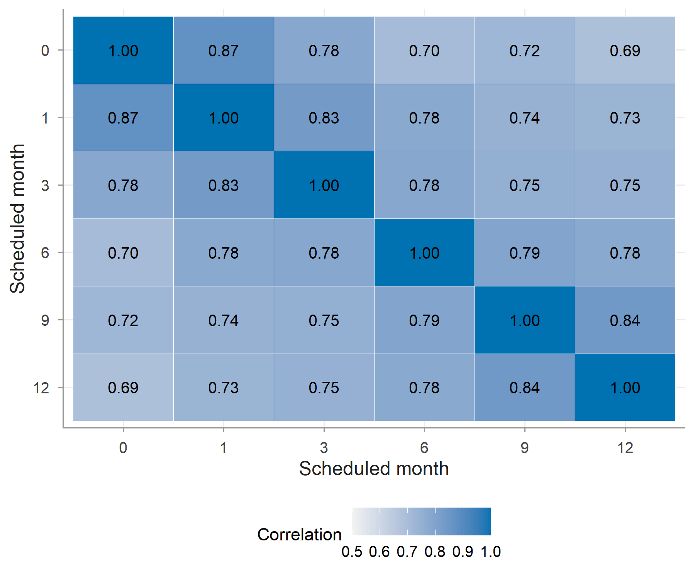
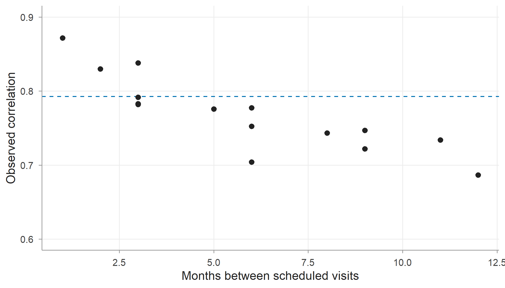
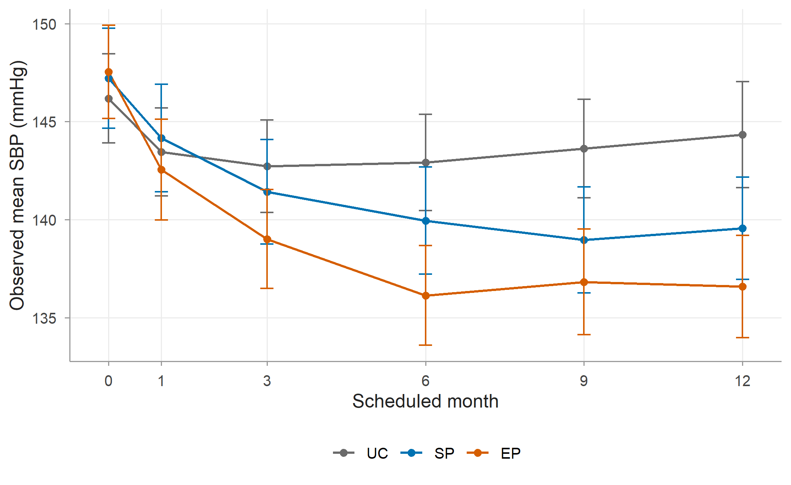
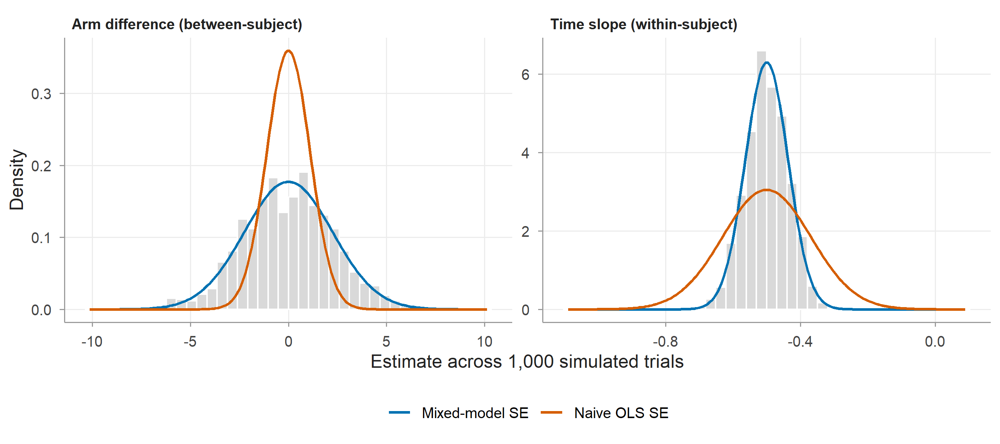

source(here::here("R", "setup.R"))
walk <- load_walk()
kidney <- load_kidney()1 Foundations of longitudinal data
Longitudinal data follow the same people over time. That simple fact gives them their power: they show how outcomes change, whether change differs between groups, and how individuals differ from one another in the way they change. It also creates their main difficulty. Measurements on the same person resemble each other, so they are not independent pieces of information, and in real studies the timing and number of measurements vary from person to person. This module builds the vocabulary and intuition for the rest of the course. It classifies study designs, takes a longitudinal dataset apart into subjects, observations, visits and measurement occasions, measures how much of the variation in blood pressure in WALK lies between people and how much within them, sets out the kinds of research question longitudinal data can answer, and shows by simulation what goes wrong when repeated measurements are analysed as if they were independent. Mixed models appear here only informally; Module 4 develops them properly.
Learning outcomes
By the end of this module you will be able to:
- 1.1 Classify a study design as longitudinal, repeated-measures, clustered or cross-sectional, and justify the classification.
- 1.2 Identify the subject, the observation, the visit and the measurement occasion in a given dataset.
- 1.3 Distinguish within-subject from between-subject variation, and estimate each from the WALK data.
- 1.4 Describe balanced and unbalanced designs, irregular visit times and unequal follow-up, and how each affects the choice of analysis.
- 1.5 State a research question about change, about group differences in change, or about individual trajectories, together with its estimand.
- 1.6 Use a simulation to show how ignoring within-subject correlation changes standard errors, and explain the direction of the error for between-subject and within-subject comparisons.
Prerequisites
Module 0 (Foundations refresher), or equivalent confidence with linear regression, interactions, confidence intervals and the dplyr/ggplot2 workflow.
WarningSimulated data
All examples use simulated data from fictional studies. Results illustrate methods; they are not empirical findings.
1.1 Kinds of study design
Statistical methods follow from the structure of the data, and that structure follows from the design. Four designs are worth distinguishing at the outset.
A cross-sectional study measures each unit once. The WALK baseline file from Module 0 is cross-sectional: 360 people, one blood pressure each. Comparisons are between people, and if the people were sampled independently the observations are independent.
A longitudinal study measures the same units repeatedly over time, and time is a variable of interest. WALK as a whole is longitudinal: each participant’s systolic blood pressure (SBP) was scheduled to be measured at months 0, 1, 3, 6, 9 and 12. The order of the measurements matters, the spacing between them matters, and questions are typically about change.
Repeated measures is the broader term for any design in which the same unit is measured more than once. All longitudinal data are repeated measures, but not all repeated measures are longitudinal. Measuring a participant’s blood pressure in the left and right arm at one visit, or under three randomly ordered postures in a single session, gives repeated measures with no meaningful time axis. The term is also used, especially in experimental psychology and agriculture, for short designs with a few fixed conditions per subject, analysed with repeated-measures ANOVA (Module 3).
A clustered design has units grouped within higher-level units: patients within clinics, pupils within schools, teeth within mouths. Members of a cluster resemble one another, so they are not independent either, but there is no time order among them. WALK is clustered as well as longitudinal: participants were recruited at 8 clinics. A longitudinal study is in fact a special case of clustered data in which the cluster is the person and the members are the measurements, ordered in time. That is why the same models (mixed models, generalized estimating equations) serve both. What longitudinal data add is the time axis, which brings questions about change and correlation structures that depend on how far apart in time two measurements are.
schematic <- bind_rows(
expand.grid(unit = 1:6, time = 1) |> mutate(design = "Cross-sectional"),
expand.grid(unit = 1:6, time = 1:5) |> mutate(design = "Longitudinal (balanced)"),
data.frame(unit = rep(1:6, c(5, 3, 5, 2, 4, 5)),
time = c(1:5, 1:3, 1:5, 1:2, c(1, 2, 4, 5), 1:5)) |>
mutate(design = "Longitudinal (unbalanced)"),
expand.grid(unit = 1:6, time = 1:3) |> mutate(design = "Clustered (no time order)")
) |>
mutate(design = factor(design, levels = c("Cross-sectional",
"Longitudinal (balanced)",
"Longitudinal (unbalanced)",
"Clustered (no time order)")))
ggplot(schematic, aes(time, factor(unit))) +
geom_tile(fill = "#0072B2", colour = "white", linewidth = 1, alpha = 0.8) +
facet_wrap(~ design, nrow = 1) +
scale_x_continuous(breaks = 1:5) +
labs(x = "Measurement occasion (or member of cluster)", y = "Unit") +
theme(panel.grid = element_blank())
The decision can be summarised as a short sequence of questions.

The four course datasets illustrate the range. WALK is a longitudinal randomised trial with scheduled visits, also clustered by clinic. CLEAR is a longitudinal trial with a binary and ordinal outcome. DIARY records counts of migraine days over successive 28-day periods, a longitudinal design whose observations are counts over periods of varying length. KIDNEY is an observational cohort whose visits happen at irregular times chosen by the clinic. All four violate the independence assumption of Module 0, and all four need methods that respect it.
NoteWhy this matters
The classification decides what “independent unit” means. In WALK the independent units are the 360 participants (or, if clinic effects are important, the 8 clinics), not the 1,897 measurements. Every standard error in the course is ultimately a statement about how much information the independent units carry.
1.2 The anatomy of a longitudinal dataset
1.2.1 Subjects, observations, visits and measurement occasions
Four words recur throughout the course, and it pays to use them precisely.
- A subject (in WALK, a participant) is the unit that is measured repeatedly and that is assumed independent of other subjects. In notation, subjects are indexed \(i = 1, \dots, N\).
- An observation is one measurement of the outcome: one row of a long-format dataset. Within subject \(i\), observations are indexed \(j = 1, \dots, n_i\), and the outcome is \(y_{ij}\).
- A visit is a scheduled contact defined by the study protocol, such as “month 6”. Visits belong to the design; they exist whether or not the participant attends.
- A measurement occasion is the time at which a measurement was actually taken, \(t_{ij}\). Its value depends on when the participant came in.
WALK keeps the last two distinct. month_sched holds the scheduled time of the visit (0, 1, 3, 6, 9 or 12) and month holds the actual time, months since randomisation.
walk |>
filter(id %in% c("W001", "W002")) |>
select(id, arm, visit, month_sched, month, sbp)#> # A tibble: 8 × 6
#> id arm visit month_sched month sbp
#> <chr> <fct> <dbl> <dbl> <dbl> <dbl>
#> 1 W001 EP 1 0 0 150
#> 2 W001 EP 2 1 1.09 148
#> 3 W001 EP 3 3 2.95 133
#> 4 W001 EP 4 6 6.04 140
#> 5 W001 EP 5 9 9.68 132
#> 6 W001 EP 6 12 11.13 132
#> 7 W002 SP 1 0 0 176
#> 8 W002 SP 2 1 1.01 165Participant W001 attended all six visits; the month-12 visit actually took place at month 11.13. Participant W002 was seen only at baseline and month 1 and then dropped out, so W002 contributes \(n_i = 2\) observations. The data are in long format: one row per observation, with the subject identifier repeated on each row. Time-invariant characteristics such as arm, age and sex are repeated on every row of a participant; time-varying ones such as steps and sbp change from row to row. Module 2 covers reshaping between long and wide format (one row per subject).
The check_long() helper gives a quick audit of the structure:
check_long(walk, id, month_sched, "sbp")#> Rows: 1897
#> Subjects: 360
#> Observations per subject: Min. 1 1st Qu. 5 Median 6 Mean 5.27 3rd Qu. 6 Max. 6
#> Duplicated subject-time rows: 0
#> Missing time values: 0
#> Missing outcome values: 0There are 1897 observations on 360 participants, between 1 and 6 per participant, with no duplicated participant–visit combinations and no missing outcome values in the rows present. Missed visits are absent rows, not rows with NA.
1.2.2 Scheduled versus actual time
Participants rarely arrive exactly on schedule. Figure 1.2 plots every observation’s actual time against its scheduled visit.
ggplot(walk, aes(month, visit_f)) +
geom_jitter(height = 0.15, width = 0, alpha = 0.25, size = 0.8) +
geom_point(data = distinct(walk, month_sched, visit_f),
aes(month_sched, visit_f), shape = 124, size = 8, colour = "#D55E00") +
scale_x_continuous(breaks = c(0, 1, 3, 6, 9, 12)) +
labs(x = "Actual time of visit (months since randomisation)",
y = "Scheduled visit (month)")
timing <- walk |>
group_by(month_sched) |>
summarise(n = n(), min_actual = min(month), max_actual = max(month),
sd_deviation = sd(month - month_sched))
timing#> # A tibble: 6 × 5
#> month_sched n min_actual max_actual sd_deviation
#> <dbl> <int> <dbl> <dbl> <dbl>
#> 1 0 360 0 0 0
#> 2 1 324 0.7 1.39 0.1201
#> 3 3 319 2.23 3.69 0.2519
#> 4 6 309 5.16 6.86 0.3355
#> 5 9 297 7.8 10.01 0.4077
#> 6 12 288 10.81 13.3 0.4452The spread of actual times grows with follow-up: the SD of the deviation from schedule is 0.12 months at month 1 and 0.45 months at month 12, and the “month-12” visit happened anywhere between month 10.81 and month 13.3. For the primary analysis of WALK, the scheduled visit defines the estimand (the mean at “month 12” as the protocol defines it) while actual time is used where the model needs a continuous clock, such as the random slope in the primary model. Using scheduled time in place of actual time is harmless when the deviations are small relative to the speed of change, and misleading when they are not.
1.3 Balanced and unbalanced designs
A design is balanced when every subject is measured at the same set of times, and complete when no planned measurements are missing. Balance matters because the classical methods of Module 3 (paired comparisons, repeated-measures ANOVA, analyses of change scores) need it: they compare the same occasions across all subjects and drop anyone with an incomplete record. The models of Modules 4 onwards do not need balance.
WALK is balanced by design and unbalanced in practice, in three ways.
- Missed visits. About 5% of follow-up visits were missed at random and the participant returned later (intermittent missingness).
- Dropout. Some participants stopped attending altogether. Dropout depends on the most recently observed SBP (Module 10), so the people still observed late in the study are not a random subset.
- Irregular timing. Even attended visits did not happen at the scheduled time.
walk |> count(id, name = "n_obs") |> count(n_obs, name = "participants")#> # A tibble: 6 × 2
#> n_obs participants
#> <int> <int>
#> 1 1 15
#> 2 2 13
#> 3 3 14
#> 4 4 14
#> 5 5 66
#> 6 6 238visit_flow(walk, id, month_sched, arm) |>
pivot_wider(names_from = arm, values_from = n_seen)#> # A tibble: 6 × 4
#> month_sched UC SP EP
#> <dbl> <int> <int> <int>
#> 1 0 120 120 120
#> 2 1 107 107 110
#> 3 3 106 110 103
#> 4 6 101 103 105
#> 5 9 99 102 96
#> 6 12 95 100 93Only 238 of 360 participants (66%) have all six measurements, and 288 were seen at month 12. An analysis restricted to complete records would discard 122 participants and, because dropout depends on SBP, would describe a selected group.
KIDNEY shows the other end of the spectrum. It is an observational cohort with no visit schedule: eGFR was measured whenever the participant attended clinic.
check_long(kidney, id, years, "egfr")#> Rows: 2936
#> Subjects: 300
#> Observations per subject: Min. 1 1st Qu. 6 Median 10 Mean 9.79 3rd Qu. 12.25 Max. 24
#> Duplicated subject-time rows: 0
#> Missing time values: 0
#> Missing outcome values: 0kidney_fu <- kidney |> group_by(id) |> summarise(n_visits = n(), follow_up = max(years))
summary(kidney_fu$follow_up)#> Min. 1st Qu. Median Mean 3rd Qu. Max.
#> 0.00 3.04 4.33 3.65 4.78 5.00Participants have between 1 and 24 visits, and follow-up ranges from 0 to 5 years (median 4.3): unequal follow-up, because people entered at different times, reached kidney failure or were lost. There is no meaningful “visit 3” in KIDNEY, only times since entry.
set.seed(4)
ids_w <- sample(unique(walk$id), 15)
ids_k <- sample(unique(kidney$id), 15)
timing_df <- bind_rows(
walk |> filter(id %in% ids_w) |>
transmute(study = "WALK (scheduled visits)", id, t = month / 12),
kidney |> filter(id %in% ids_k) |>
transmute(study = "KIDNEY (routine clinic visits)", id, t = years)
) |>
mutate(study = factor(study, levels = c("WALK (scheduled visits)",
"KIDNEY (routine clinic visits)")))
ggplot(timing_df, aes(t, reorder(id, t, max))) +
geom_line(aes(group = id), colour = "#D9D9D9") +
geom_point(size = 1.4) +
facet_wrap(~ study, scales = "free") +
labs(x = "Years since entry", y = "Participant") +
theme(axis.text.y = element_blank(), axis.ticks.y = element_blank())
Irregular timing is not always innocent. In KIDNEY, clinicians see patients more often when their kidney function is poor:
kidney_gaps <- kidney |>
arrange(id, years) |>
group_by(id) |>
mutate(gap_months = 12 * (years - lag(years)), prev_egfr = lag(egfr)) |>
ungroup() |>
filter(!is.na(gap_months)) |>
group_by(previous_egfr_below_30 = prev_egfr < 30) |>
summarise(n_gaps = n(), mean_gap_months = mean(gap_months))
kidney_gaps#> # A tibble: 2 × 3
#> previous_egfr_below_30 n_gaps mean_gap_months
#> <lgl> <int> <dbl>
#> 1 FALSE 2190 5.425
#> 2 TRUE 446 2.826After an eGFR below 30 the next visit came on average 2.8 months later, compared with 5.4 months otherwise. The visit process depends on the outcome history. Sicker patients contribute more measurements, so a naive average over all measurements over-represents low eGFR. This is informative visit timing, and Module 10 discusses its consequences.
How each feature affects the choice of analysis:
| Feature | Example | Consequence for analysis |
|---|---|---|
| Balanced and complete | Rare in practice | Classical methods (Module 3) are possible, though still not ideal |
| Missed visits, dropout | WALK | Complete-case methods discard data and can be biased; likelihood-based mixed models use all observed data and are valid under MAR (Modules 4, 10) |
| Irregular actual times | WALK, KIDNEY | Model time as continuous, using actual times; correlation models that depend on time gaps (Modules 5, 9) |
| Unequal follow-up | KIDNEY | Subjects contribute different amounts of information; models must not assume a common set of occasions |
| Outcome-dependent visits | KIDNEY | Even mixed models may be biased; specialist methods may be needed (Modules 10, 13) |
1.4 Within-subject dependence and between-subject variation
1.4.1 The research question and estimand
How similar are repeated SBP measurements on the same person, and how much of the total variation in SBP lies between people rather than within them? The estimands are two variance components: the between-subject variance \(\tau_0^2\), describing how much people’s typical SBP levels differ, and the within-subject (residual) variance \(\sigma^2\), describing how much a person’s measurements fluctuate around their own level. Their ratio gives the intraclass correlation (ICC), \(\rho_I = \tau_0^2/(\tau_0^2 + \sigma^2)\): the proportion of the total variance that lies between subjects, which is also the correlation between two measurements on the same subject under this model.
1.4.2 Data structure and outcome types
Long-format WALK data: 1897 SBP measurements (continuous, mmHg) nested within 360 participants, with scheduled visit and arm as fixed characteristics of each observation.
1.4.3 Intuition
Look at a few participants at once. Figure 1.4 shows every measurement for 25 participants who attended all six visits, ordered by their own mean.
set.seed(21)
ids_b <- sample(unique(walk$id[walk$visit == 6]), 25)
spread_df <- walk |>
filter(id %in% ids_b) |>
group_by(id) |>
mutate(person_mean = mean(sbp)) |>
ungroup()
ggplot(spread_df, aes(reorder(id, person_mean), sbp)) +
geom_hline(yintercept = mean(walk$sbp), linetype = "dashed") +
geom_point(alpha = 0.5, size = 1.4) +
geom_point(aes(y = person_mean), shape = 95, size = 8, colour = "#D55E00") +
labs(x = "Participant (ordered by own mean SBP)", y = "SBP (mmHg)") +
theme(axis.text.x = element_blank(), axis.ticks.x = element_blank())
The orange bars, each person’s own mean, range over about 45 mmHg. The points around each bar, a person’s six measurements, spread over a much narrower range. Most of the variation in SBP is between people: some people have high blood pressure and some low, and they keep it. The rest is within people: visit-to-visit fluctuation, measurement error and any real change over the year. Because a person’s measurements cluster around their own level, knowing one of them tells you a lot about the others. That is within-subject dependence.
A spaghetti plot tells the same story in time order: lines rarely cross much, because people who start high tend to stay high.
plot_spaghetti(walk, month, sbp, id, group = arm, n_show = 45) +
labs(x = "Months since randomisation", y = "SBP (mmHg)")
The observed correlation matrix
The most direct description of within-subject dependence is the correlation between measurements at each pair of visits, computed across participants who attended both.
cor_walk <- visit_correlation(walk, id, month_sched, sbp)
round(cor_walk, 2)#> 0 1 3 6 9 12
#> 0 1.00 0.87 0.78 0.70 0.72 0.69
#> 1 0.87 1.00 0.83 0.78 0.74 0.73
#> 3 0.78 0.83 1.00 0.78 0.75 0.75
#> 6 0.70 0.78 0.78 1.00 0.79 0.78
#> 9 0.72 0.74 0.75 0.79 1.00 0.84
#> 12 0.69 0.73 0.75 0.78 0.84 1.00cor_long <- as.data.frame(as.table(cor_walk)) |>
setNames(c("row", "col", "r")) |>
mutate(row = factor(row, levels = rev(colnames(cor_walk))))
ggplot(cor_long, aes(col, row, fill = r)) +
geom_tile(colour = "white") +
geom_text(aes(label = sprintf("%.2f", r)), size = 3.5) +
scale_fill_gradient(low = "#F2F2F2", high = "#0072B2", limits = c(0.5, 1),
name = "Correlation") +
labs(x = "Scheduled month", y = "Scheduled month") +
theme(panel.grid = element_blank())
Every correlation is large, between 0.69 and 0.87. Two further features are visible. Correlations are highest for adjacent visits (0.87 between baseline and month 1, 0.84 between months 9 and 12) and lower for visits far apart (0.69 between baseline and month 12). And they do not fall towards zero: even a year apart, measurements remain strongly correlated. A large, persistent component (each person’s own level) plus a smaller component that fades with the time gap is the typical pattern of longitudinal data, and Module 5 models it explicitly. (These correlations pool the three arms, whose means change differently over time. Computed within each arm, the correlations show the same overall picture of high values that decline with the gap between visits, with some variation between arms, since each arm contributes only about 100 participants to each pair of visits. Exercise 3 in the workbook asks you to check this.)
A simple descriptive decomposition
One crude way to separate the two sources is to compute each person’s mean and each observation’s deviation from it.
decomp <- walk |>
group_by(id) |>
mutate(person_mean = mean(sbp), deviation = sbp - person_mean) |>
ungroup()
descriptive <- c(total = var(walk$sbp),
between_person_means = var(distinct(decomp, id, person_mean)$person_mean),
within_deviations = var(decomp$deviation))
round(descriptive, 1)#> total between_person_means within_deviations
#> 184.7 165.4 37.3The variance of person means (165.4 mmHg²) is much larger than the variance of deviations around them (37.3 mmHg²). This decomposition is only approximate. Each person mean is itself estimated from a few noisy measurements, so the variance of person means includes part of the within-person variance; and deviations from a mean computed from the same data are smaller than deviations from the true personal level. Both biases matter most for people with few observations. A model separates the components properly.
1.4.4 The model
The simplest model that represents “each person has their own level” is the random-intercept model:
\[ y_{ij} = \mathbf{x}_{ij}^\top\boldsymbol\beta + b_{0i} + \varepsilon_{ij}, \qquad b_{0i} \sim N(0, \tau_0^2), \qquad \varepsilon_{ij} \sim N(0, \sigma^2), \]
with all \(b_{0i}\) and \(\varepsilon_{ij}\) independent of each other.
- \(y_{ij}\) is the SBP of participant \(i\) at occasion \(j\).
- \(\mathbf{x}_{ij}^\top\boldsymbol\beta\) is the mean structure, the fixed effects: here a separate mean for each combination of scheduled visit and arm, so that the treatment-related changes over time are not counted as within-person “noise”.
- \(b_{0i}\) is the random intercept: how far participant \(i\)’s personal level sits above or below the mean for their arm and visit. It is the same at every occasion, which is what makes measurements on the same person alike.
- \(\tau_0^2\) is the between-subject variance of these personal levels.
- \(\varepsilon_{ij}\) is the residual error, the within-subject deviation at occasion \(j\), with variance \(\sigma^2\).
Two measurements on the same person share \(b_{0i}\), so their covariance is \(\tau_0^2\) and their correlation is \(\rho_I = \tau_0^2/(\tau_0^2 + \sigma^2)\), the ICC. Measurements on different people share nothing and are independent. This is the first linear mixed model of the course: “mixed” because it contains both fixed effects (\(\boldsymbol\beta\)) and random effects (\(b_{0i}\)). Module 4 develops it fully.
1.4.5 Assumptions and limitations
The model assumes that the random intercepts and residuals are normally distributed with constant variances, and that participants are independent. Its most restrictive assumption is about correlation: every pair of measurements on a person has the same correlation \(\rho_I\), whether they are one month or twelve months apart. This pattern is called compound symmetry. The observed matrix above shows that this is only an approximation for WALK, since correlations decline with the time gap. Adding a random slope or a serial correlation term relaxes it (Modules 4 and 5). Here we use the random-intercept model for what it does well: a first, interpretable split of the variance.
1.4.6 Fitting the model in R
m_ri0 <- lmer(sbp ~ 1 + (1 | id), data = walk, control = lmer_ctrl)
m_ri <- lmer(sbp ~ visit_f * arm + (1 | id), data = walk, control = lmer_ctrl)
VarCorr(m_ri)#> Groups Name Std.Dev.
#> id (Intercept) 12.02
#> Residual 6.15(1 | id) asks for a random intercept for each value of id. m_ri0 has only an overall mean; m_ri has the visit-by-arm means. VarCorr() shows the estimated standard deviations of the random intercept and the residual. Fitting is by restricted maximum likelihood (REML), explained in Module 4.
1.4.7 Interpreting the output
vc <- rbind(
data.frame(model = "Intercept only", varcomp_table(m_ri0), icc = icc_lmer(m_ri0)),
data.frame(model = "Visit x arm means", varcomp_table(m_ri), icc = icc_lmer(m_ri))
)
vc#> model grp var1 var2 type value icc
#> 1 Intercept only id (Intercept) <NA> SD 12.231 0.7643
#> 2 Intercept only Residual <NA> <NA> SD 6.792 0.7643
#> 3 Visit x arm means id (Intercept) <NA> SD 12.021 0.7925
#> 4 Visit x arm means Residual <NA> <NA> SD 6.150 0.7925| Output | Meaning | Estimate (visit × arm model) |
|---|---|---|
id (Intercept) SD |
Between-participant SD of personal SBP levels, \(\hat\tau_0\) | 12.0 mmHg |
Residual SD |
Within-participant SD around one’s own level, \(\hat\sigma\) | 6.2 mmHg |
| ICC | Share of variance between participants; correlation of two measurements on one person | 0.79 |
People’s typical SBP levels vary with an SD of about 12 mmHg: roughly 95% of participants have a personal level within ±24 mmHg of the mean for their arm and visit. A single person’s measurements fluctuate around their level with an SD of about 6.2 mmHg. The ICC of 0.79 says that 79% of the variance in SBP, after accounting for the visit and arm means, is between participants.
In the intercept-only model the residual SD is larger (6.8 mmHg) and the ICC smaller (0.76), because the changes in mean SBP over time and between arms are then counted as within-person variation. The between-person SD is similar in both (12.2 and 12.0 mmHg). Which mean structure to adjust for depends on the question: for “how much do people differ beyond what the design explains?”, the visit-by-arm model is the right one.
Because the data are simulated, the generating values are known: a between-participant intercept SD of 11 mmHg (plus a clinic SD of 3 mmHg, which this model absorbs into the participant level, giving \(\sqrt{11^2 + 3^2} \approx 11.4\)), a serially correlated residual with SD 5 mmHg and measurement error with SD 4 mmHg, so a total within-person SD of \(\sqrt{5^2+4^2} \approx 6.4\) mmHg. The estimates (12.0 and 6.2 mmHg) are close. Individual slopes also vary in the generating model, which pushes some time-varying person-specific variation into each component.
1.4.8 Checking the model
The key check for this model is whether its implied correlation, a single value of 0.79 for every pair of visits, matches the observed correlations.
lag_df <- as.data.frame(as.table(cor_walk)) |>
setNames(c("t1", "t2", "r")) |>
mutate(t1 = as.numeric(as.character(t1)), t2 = as.numeric(as.character(t2))) |>
filter(t1 < t2) |>
mutate(gap = t2 - t1)
ggplot(lag_df, aes(gap, r)) +
geom_hline(yintercept = icc1, linetype = "dashed", colour = "#0072B2") +
geom_point(size = 2) +
scale_y_continuous(limits = c(0.6, 0.9)) +
labs(x = "Months between scheduled visits", y = "Observed correlation")
Visits a month or two apart are more highly correlated than the model implies, and visits nine to twelve months apart less so. The decline is gradual, so the random-intercept model captures the dominant feature (a high, persistent correlation) and misses a secondary one (decay with the time gap). For the purpose of this module, separating between- from within-person variance, that is acceptable. For the final analysis of WALK it is not, and Modules 4 and 5 add a random slope and serial correlation. The usual residual checks of Module 0 also apply, now at two levels (residuals and predicted random intercepts); Module 11 covers them.
1.4.9 Reporting
TipReporting example
SBP measurements were strongly correlated within participants: observed correlations between scheduled visits ranged from 0.69 (baseline and month 12) to 0.87, declining as the time between visits increased. In a linear mixed model with a random intercept for participant and fixed effects for scheduled visit, arm and their interaction, the between-participant SD was 12.0 mmHg and the within-participant residual SD was 6.2 mmHg, giving an intraclass correlation of 0.79.
1.4.10 Common mistakes
ImportantCommon mistakes
- Computing the ICC without adjusting for the mean structure. Changes over time and differences between arms then inflate the within-person variance. State which fixed effects the ICC is conditional on.
- Reading the variance of person means as the between-person variance. It includes part of the within-person variance, especially when people have few observations. Use a model.
- Assuming the ICC describes every pair of visits. Under compound symmetry it does; in real longitudinal data correlations usually decline with the time gap. Look at the observed matrix.
- Calling high within-person correlation a problem to be removed. It is information. It is what makes within-person comparisons (change) precise.
1.5 Research questions and their estimands
An estimand is the precise quantity a study aims to estimate: what is compared, in whom, at which times and on what scale. Stating it before choosing a model prevents the common situation in which a model is fitted and then a question is found for its coefficients. Longitudinal studies ask three main kinds of question (Fitzmaurice et al. 2011; Singer and Willett 2003).
plot_observed_means(walk, month_sched, sbp, arm) +
scale_x_continuous(breaks = c(0, 1, 3, 6, 9, 12)) +
labs(x = "Scheduled month", y = "Observed mean SBP (mmHg)")
1.5.1 Questions about change
How does mean SBP change over 12 months in people offered the enhanced programme? The estimand is the mean change from baseline in one group,
\[ \Delta_{\text{EP}}(12) = E(Y_{i,12} - Y_{i,0} \mid \text{EP}), \]
the average over the population of EP participants of each person’s change from month 0 to month 12. Since the expectation of a difference is the difference of expectations, it equals \(\mu_{\text{EP}}(12) - \mu_{\text{EP}}(0)\), the difference between mean SBP at the two times. In WALK the true value, known only because the data are simulated, is −10.2 mmHg. A continuous-time version is the mean rate of change (mmHg per month) under a linear trajectory. In an observational cohort, a question about change might be: how fast does eGFR decline on average in KIDNEY, and does it decline faster in people with diabetes?
Change within one arm of a trial is not a treatment effect: SBP may fall in everyone through regression to the mean, seasonal variation or the attention that comes with being in a study. In WALK the true usual-care change is −2.1 mmHg.
1.5.2 Questions about group differences in change
Does the enhanced programme reduce SBP more than usual care? This is the question a trial is designed to answer, and it is an interaction between group and time: the difference in mean change,
\[ \delta_{\text{EP}} = \Delta_{\text{EP}}(12) - \Delta_{\text{UC}}(12) = [\mu_{\text{EP}}(12) - \mu_{\text{EP}}(0)] - [\mu_{\text{UC}}(12) - \mu_{\text{UC}}(0)]. \]
This is the course’s primary estimand for WALK, for each programme against usual care. The true values are −4.6 mmHg (SP) and −8.1 mmHg (EP). Because WALK is randomised, \(\mu_{\text{EP}}(0) = \mu_{\text{UC}}(0)\) in the population, so this is also the difference in mean SBP at month 12; analyses that exploit this (ANCOVA, constrained baseline models) are discussed in Module 3.
As a preview, here is the estimate from the course’s primary model, which Modules 4 and 6 develop fully. In a model with scheduled visit as a factor interacted with arm, the coefficient visit_f12:armEP is exactly \(\delta_{\text{EP}}\).
m_primary <- lmer(sbp ~ visit_f * arm + (1 + month | id), data = walk,
control = lmer_ctrl)
primary <- fixef_table(m_primary) |>
filter(term %in% c("visit_f12:armSP", "visit_f12:armEP")) |>
mutate(true_value = c(-4.6, -8.1))
primary#> term estimate se df lower upper p true_value
#> 1 visit_f12:armSP -5.377 1.422 483.2 -8.17 -2.584 1.747e-04 -4.6
#> 2 visit_f12:armEP -8.969 1.437 490.8 -11.79 -6.146 9.311e-10 -8.1The estimated difference in mean change at month 12 is -5.4 (-8.2 to -2.6) mmHg for SP and -9.0 (-11.8 to -6.1) mmHg for EP compared with usual care. Both true values lie inside their intervals. Do not worry yet about how the model works: the point here is that the estimand was defined first, and the model was chosen so that one of its parameters (or a combination, computed with emmeans) equals it.
1.5.3 Questions about individual trajectories
How much do participants differ in their rate of change, and what is a particular participant’s likely trajectory? Here the target is not a mean but the variation around it. With a linear trajectory for each person,
\[ y_{ij} = (\beta_0 + b_{0i}) + (\beta_1 + b_{1i})\,t_{ij} + \varepsilon_{ij}, \]
the estimand is the variance of the individual slopes, \(\tau_1^2\) (the random slope variance), or a prediction of a particular person’s slope \(\beta_1 + b_{1i}\). In WALK the true SD of individual linear slopes is 0.35 mmHg/month; in KIDNEY a clinician may want each patient’s predicted eGFR decline to judge when kidney failure is likely. The spaghetti plot (Figure 1.5) shows the raw material: lines with different levels and, to a lesser extent, different slopes. Modules 4 and 6 estimate these quantities and explain why individual predictions are “shrunk” towards the mean.
| Question type | Example | Estimand | Where in the course |
|---|---|---|---|
| Change | Mean change in SBP in EP | \(\mu_{\text{EP}}(12) - \mu_{\text{EP}}(0)\) | Modules 3, 4, 6 |
| Group difference in change | EP vs UC in WALK | \([\mu_{\text{EP}}(12) - \mu_{\text{EP}}(0)] - [\mu_{\text{UC}}(12) - \mu_{\text{UC}}(0)]\) | Modules 3–6 (primary) |
| Individual trajectories | Variation in eGFR decline in KIDNEY | \(\tau_1^2\); predicted \(\beta_1 + b_{1i}\) | Modules 4, 6, 9, 13 |
Two further distinctions shape the estimand. Population-average (marginal) questions concern the mean outcome in a population (“how much lower is mean SBP in EP?”); subject-specific (conditional) questions concern an individual’s expected outcome given their own random effects. For continuous outcomes with linear models the two coincide for the fixed effects; for binary and count outcomes they do not (Modules 7 and 8). And because WALK has dropout, the estimand must say whether it refers to everyone randomised, as if they had all been measured at month 12 (the course’s choice), or only to those who remained (Module 10).
ImportantCommon mistakes
- Reporting the change within the treated arm as the treatment effect. The control arm also changes. The effect is the difference in change.
- Comparing “significant change in EP, no significant change in UC”. A difference in significance is not a significant difference. Estimate the difference in change directly.
- Using observed visit means as the estimand. With outcome-dependent dropout, observed means at late visits describe a selected group (Module 2).
- Fitting a model and then interpreting whatever coefficients appear. Write the estimand first; then make sure a parameter or contrast of the model equals it.
1.6 Why ignoring the dependence misleads
1.6.1 The research question and estimand
If repeated measurements are analysed with ordinary least squares (OLS) as though every row were independent, how wrong are the standard errors, and in which direction? The quantity of interest here is a property of a method, not of a population: the ratio of the standard error a method reports to the true sampling standard deviation of its estimate. A ratio of 1 means honest standard errors; below 1 means overconfidence.
1.6.2 Data structure and outcome types
Two-arm longitudinal trials with a continuous outcome, five scheduled occasions (months 0, 3, 6, 9, 12) and 50 participants per arm, simulated many times so that the true sampling distribution of each estimate can be seen. We also compare the two approaches on the real (simulated) WALK data.
1.6.3 Intuition
Think of two kinds of comparison.
A between-subject comparison contrasts different people: arm A against arm B, or women against men. Its precision depends on the number of independent people and on how much people differ. If each person is measured five times and their measurements are highly correlated, those five rows carry little more information about that person’s level than one row would. OLS counts them as five independent pieces of evidence and so overstates the information: its standard errors are too small. With \(m\) measurements per person and intraclass correlation \(\rho_I\), the variance of a between-person comparison is inflated by roughly the design effect \(1 + (m-1)\rho_I\) relative to what OLS assumes.
A within-subject comparison contrasts measurements on the same person: month 12 against month 0, or the slope over time. Each person serves as their own control, so the large between-person differences in level cancel out. The relevant noise is only the within-person variance \(\sigma^2\). OLS does not know this: it treats the between-person variance as noise too, so its standard errors are too large. Under a random-intercept model with balanced data the OLS variance for a time effect is too large by the factor \(1/(1-\rho_I)\).
So ignoring the correlation does not simply make all standard errors too small. It gets between-person comparisons wrong in one direction and within-person comparisons wrong in the other. A model that represents the correlation, such as a mixed model, gets both right.
1.6.4 The model
Each simulated trial follows the data-generating model of sim_two_arm():
\[ y_{ij} = \beta_0 + (\beta_1 + \delta\,\text{Trt}_i)\,t_{j} + b_{0i} + b_{1i}\,t_j + \varepsilon_{ij}, \qquad \mathbf{b}_i \sim N(\mathbf{0}, G), \qquad \varepsilon_{ij} \sim N(0, \sigma^2), \]
where \(\text{Trt}_i\) indicates the treated arm, \(\delta\) is the difference in mean slope, \(G\) contains the random-intercept and random-slope variances \(\tau_0^2\), \(\tau_1^2\) and covariance \(\tau_{01}\), and \(t_j\) are the scheduled times.
- Scenario A (random intercept only). \(\tau_0 = 11\), \(\tau_1 = 0\), \(\sigma = 6\) mmHg, \(\beta_0 = 150\), \(\beta_1 = -0.5\) mmHg/month, \(\delta = 0\), and no difference between arms at any time. The implied ICC is \(11^2/(11^2 + 6^2) = 0.77\). Each trial is analysed with OLS
lm(y ~ time + trt)and with a mixed modellmer(y ~ time + trt + (1 | id)). The arm coefficient is a between-subject comparison (true value 0); the time coefficient is a within-subject comparison (true value −0.5). - Scenario B (random intercept and slope). The
sim_two_arm()defaults: \(\tau_0 = 11\), \(\tau_1 = 0.4\) mmHg/month, correlation −0.2, \(\sigma = 6\), \(\beta_1 = -0.2\), \(\delta = -0.5\) mmHg/month. Each trial is analysed with OLSlm(y ~ time * trt)and withlmer(y ~ time * trt + (time | id)). The target is the arm-by-time interaction \(\delta\): a difference between groups in within-person change.
For each estimate we record the OLS standard error, the mixed-model standard error, and the estimates themselves. The standard deviation of the estimates across replicates is the true sampling SD, the benchmark against which both reported SEs are judged.
1.6.5 Assumptions and limitations
The simulation is honest only about the scenarios it covers: normal random effects and errors, balanced times, no missing data, 100 participants. Conclusions about direction are general (they follow from the algebra above); the size of the error depends on the ICC, the number of occasions and, for slopes, on how much individual slopes vary. With a finite number of replicates every summary has Monte Carlo error, which we report following Morris et al. (2019). For a standard deviation estimated from \(R\) replicates the Monte Carlo SE is approximately \(\text{SD}/\sqrt{2(R-1)}\); for a coverage proportion \(p\) it is \(\sqrt{p(1-p)/R}\).
1.6.6 Fitting the model in R
The functions below simulate one trial and return the estimates and standard errors from both analyses. The same code, seeds and numbers of replicates are used in scripts/01b_independence_simulation.R. (The chunks are cached because the simulation takes a few minutes.)
sim_once_ri <- function() {
d <- sim_two_arm(n_per_arm = 50, times = c(0, 3, 6, 9, 12),
b0 = 150, b_time = -0.5, delta = 0,
sd_int = 11, sd_slope = 0, cor_int_slope = 0, sd_resid = 6)
ols <- coef(summary(lm(y ~ time + trt, data = d)))
lmm <- coef(summary(lmer(y ~ time + trt + (1 | id), data = d,
control = lmer_ctrl)))
c(arm_est = ols["trt", 1], arm_se_ols = ols["trt", 2],
arm_se_lmm = lmm["trt", 2], arm_est_lmm = lmm["trt", 1],
time_est = ols["time", 1], time_se_ols = ols["time", 2],
time_se_lmm = lmm["time", 2], time_est_lmm = lmm["time", 1])
}
sim_once_rs <- function(sd_slope = 0.4) {
d <- sim_two_arm(n_per_arm = 50, sd_slope = sd_slope)
ols <- coef(summary(lm(y ~ time * trt, data = d)))
lmm <- coef(summary(suppressMessages(
lmer(y ~ time * trt + (time | id), data = d, control = lmer_ctrl))))
c(int_est = ols["time:trt", 1], int_se_ols = ols["time:trt", 2],
int_se_lmm = lmm["time:trt", 2], int_est_lmm = lmm["time:trt", 1])
}
summarise_se <- function(est, se_ols, est_lmm, se_lmm, truth, label) {
R <- length(est)
cov_ols <- mean(abs(est - truth) <= 1.96 * se_ols)
cov_lmm <- mean(abs(est_lmm - truth) <= 1.96 * se_lmm)
data.frame(
estimand = label, replicates = R, true_value = truth,
mean_estimate = mean(est), empirical_sd = sd(est),
mcse_sd = sd(est) / sqrt(2 * (R - 1)),
mean_se_ols = mean(se_ols), mean_se_lmm = mean(se_lmm),
ratio_ols = mean(se_ols) / sd(est), ratio_lmm = mean(se_lmm) / sd(est_lmm),
coverage_ols = cov_ols, coverage_lmm = cov_lmm,
mcse_coverage_ols = sqrt(cov_ols * (1 - cov_ols) / R),
mcse_coverage_lmm = sqrt(cov_lmm * (1 - cov_lmm) / R))
}set.seed(20261)
res_a <- as.data.frame(t(replicate(1000, sim_once_ri())))
set.seed(20262)
res_b <- as.data.frame(t(replicate(500, sim_once_rs())))Scenario A uses 1,000 replicates. Scenario B uses 500, because random-slope models take longer to fit; its Monte Carlo errors are correspondingly a little larger.
1.6.7 Interpreting the output
sim_summary <- rbind(
summarise_se(res_a$arm_est, res_a$arm_se_ols, res_a$arm_est_lmm,
res_a$arm_se_lmm, 0, "A: arm difference (between-subject)"),
summarise_se(res_a$time_est, res_a$time_se_ols, res_a$time_est_lmm,
res_a$time_se_lmm, -0.5, "A: time slope (within-subject)"),
summarise_se(res_b$int_est, res_b$int_se_ols, res_b$int_est_lmm,
res_b$int_se_lmm, -0.5, "B: arm-by-time interaction")
)
sim_summary |>
select(estimand, mean_estimate, empirical_sd, mcse_sd, mean_se_ols,
mean_se_lmm, coverage_ols, coverage_lmm) |>
mutate(across(where(is.numeric), \(x) round(x, 3)))#> estimand mean_estimate empirical_sd mcse_sd
#> 1 A: arm difference (between-subject) -0.014 2.298 0.051
#> 2 A: time slope (within-subject) -0.499 0.063 0.001
#> 3 B: arm-by-time interaction -0.496 0.145 0.005
#> mean_se_ols mean_se_lmm coverage_ols coverage_lmm
#> 1 1.110 2.251 0.652 0.942
#> 2 0.131 0.063 1.000 0.950
#> 3 0.260 0.149 1.000 0.950Read the table one row at a time.
Arm difference (between-subject). Across 1000 trials the OLS estimates of the arm difference averaged -0.014, close to the true value of 0: ignoring the correlation does not bias the estimate here. But their true sampling SD was 2.30 mmHg (Monte Carlo SE 0.051), while OLS reported an average SE of only 1.11: 48% of the truth, too small. The ratio agrees with the design-effect prediction, \(1/\sqrt{1 + 4 \times 0.771} = 0.49\). Consequently, the nominal 95% OLS confidence intervals contained the true value in only 65.2% of trials (Monte Carlo SE 1.5 percentage points), so a test of “no arm difference” at the 5% level would reject a true null roughly 35% of the time. The mixed model reported an average SE of 2.25, 98% of the true SD, with coverage 94.2%.
Time slope (within-subject). The OLS estimates of the slope were unbiased (mean -0.499, truth −0.5) with true sampling SD 0.063. OLS reported 0.131, about 2.06 times the truth: too large, close to the predicted factor \(1/\sqrt{1-\rho_I} = 2.09\). The OLS intervals were far too wide and covered the truth in 100.0% of trials instead of 95%. Overcoverage sounds harmless, but it means a real change over time is much less likely to be detected: OLS throws away the advantage of each person being their own control. The mixed model’s SE averaged 0.063 (100% of the truth), with coverage 95.0%.
Arm-by-time interaction (scenario B). The difference in slopes between arms is a between-group comparison of within-person change. Its true sampling SD was 0.145 (Monte Carlo SE 0.005). OLS reported 0.260, too large by a factor of 1.79, with coverage 100.0%; the mixed model with a random intercept and slope reported 0.149 (103% of the truth), with coverage 95.0%. Here the random slopes add genuine between-person variation in change, which OLS partly ignores, but in this scenario the between-person intercept variance, which OLS wrongly counts as noise, dominates. If individual slopes varied much more, the two errors could cancel or reverse; Exercise 9 in the workbook explores this. The direction for within-person comparisons is therefore reliable when people differ mainly in level, and must be checked when they differ substantially in their rate of change.
plot_df <- rbind(
data.frame(estimand = "Arm difference (between-subject)", est = res_a$arm_est,
truth = 0, se_ols = mean(res_a$arm_se_ols), se_lmm = mean(res_a$arm_se_lmm)),
data.frame(estimand = "Time slope (within-subject)", est = res_a$time_est,
truth = -0.5, se_ols = mean(res_a$time_se_ols), se_lmm = mean(res_a$time_se_lmm))
)
curves <- plot_df |>
group_by(estimand) |>
summarise(truth = first(truth), se_ols = first(se_ols), se_lmm = first(se_lmm)) |>
rowwise() |>
reframe(estimand = estimand,
x = seq(truth - 4.5 * max(se_ols, se_lmm), truth + 4.5 * max(se_ols, se_lmm),
length.out = 200),
`Naive OLS SE` = dnorm(x, truth, se_ols),
`Mixed-model SE` = dnorm(x, truth, se_lmm)) |>
pivot_longer(c(`Naive OLS SE`, `Mixed-model SE`), names_to = "curve",
values_to = "density")
ggplot(plot_df, aes(est)) +
geom_histogram(aes(y = after_stat(density)), bins = 40, fill = "#D9D9D9", colour = "white") +
geom_line(data = curves, aes(x, density, colour = curve), linewidth = 0.8) +
facet_wrap(~ estimand, scales = "free") +
scale_colour_manual(values = c(`Naive OLS SE` = "#D55E00", `Mixed-model SE` = "#0072B2"),
name = NULL) +
labs(x = "Estimate across 1,000 simulated trials", y = "Density")
The same pattern in WALK
The same comparison on the WALK data uses the course’s linear-time model, lmer(sbp ~ month * arm + (1 + month | id)), against its OLS counterpart.
m_ols <- lm(sbp ~ month * arm, data = walk)
m_lin <- lmer(sbp ~ month * arm + (1 + month | id), data = walk, control = lmer_ctrl)
se_compare <- data.frame(term = names(coef(m_ols)),
est_ols = coef(m_ols), se_ols = coef(summary(m_ols))[, 2],
est_lmm = fixef(m_lin), se_lmm = coef(summary(m_lin))[, 2],
row.names = NULL) |>
mutate(se_ratio = se_ols / se_lmm)
se_compare |> mutate(across(where(is.numeric), \(x) round(x, 3)))#> term est_ols se_ols est_lmm se_lmm se_ratio
#> 1 (Intercept) 144.330 0.803 145.010 1.191 0.674
#> 2 month -0.083 0.124 -0.034 0.076 1.638
#> 3 armSP 0.645 1.133 0.305 1.683 0.673
#> 4 armEP -0.366 1.133 -0.764 1.683 0.673
#> 5 month:armSP -0.511 0.174 -0.490 0.106 1.637
#> 6 month:armEP -0.722 0.175 -0.724 0.107 1.635The pattern repeats. For the arm terms, which compare different people at month 0, the OLS standard errors (1.13 and 1.13) are about two thirds of the mixed-model ones (1.68, 1.68). For the month slope and the arm-by-month interactions, which rest on within-person change, the OLS standard errors are about 1.64 times the mixed-model ones. In WALK the arm-by-month interaction is the treatment comparison, so naive OLS would understate the evidence for a programme effect; for a baseline group comparison it would overstate it. We cannot compare with a “true” SE in a single dataset, but the simulation shows which of the two to trust.
1.6.8 Checking the model
The check in a simulation study is internal consistency: the mean of the model-based SEs should match the empirical SD of the estimates, and nominal 95% intervals should cover the truth about 95% of the time, within Monte Carlo error. The mixed models pass both checks in all three rows of the table (coverage 94.2% to 95.0%), and OLS fails both. Two further checks are worth making whenever you run a simulation: that the estimates are unbiased (the mean estimates are close to the true values in every row), and that the conclusions do not hinge on an unusual seed (rerunning with another seed changes the numbers only within their Monte Carlo errors).
1.6.9 Reporting
TipReporting example
We simulated 1000 two-arm trials (50 participants per arm, five occasions, random-intercept SD 11 mmHg, residual SD 6 mmHg). Treating repeated measurements as independent (OLS) gave standard errors for the between-arm difference that averaged 48% of the empirical SD of the estimates (1.11 vs 2.30 mmHg; Monte Carlo SE of the SD 0.051), and 95% confidence intervals covered the true value in 65.2% of trials. For the within-subject time slope, OLS standard errors were 2.06 times the empirical SD (coverage 100.0%). A random-intercept mixed model gave standard errors within 2% of the empirical SD for both comparisons, with coverage of 94.2% and 95.0%.
1.6.10 Common mistakes
ImportantCommon mistakes
- Believing that ignoring correlation always makes SEs too small. It does for between-subject comparisons. For within-subject comparisons the naive SEs are usually too large.
- Thinking that more rows means more information. Information about between-person comparisons comes from people. A sixth measurement on the same person adds little.
- Fixing the problem by averaging each person’s measurements. That is valid for some between-person questions but discards information about change and handles unequal numbers of observations poorly.
- Reporting a simulation without Monte Carlo error. Every simulated proportion and SD is an estimate; give its Monte Carlo SE and the number of replicates.
- Generalising a simulation beyond its scenario. The size of the error depends on the ICC, the number of occasions and the slope variance.
Summary
Longitudinal data are repeated measurements on the same subjects over time, a special case of clustered data with a time order. Each observation belongs to a subject, is linked to a scheduled visit and was taken at an actual measurement occasion; WALK keeps scheduled and actual times separate, while KIDNEY has only irregular actual times and unequal follow-up. Most of the variation in SBP in WALK lies between people (ICC about 0.79 after adjusting for visit and arm), so measurements on the same person are strongly correlated, with correlations that decline slowly as visits get further apart. Research questions about change, group differences in change and individual trajectories each correspond to a distinct estimand, and the WALK primary estimand is the difference in mean change from baseline to month 12. Analysing repeated measurements as independent gives standard errors that are too small for comparisons between people and usually too large for comparisons within people, as the simulation shows; models that represent the dependence, beginning with the mixed models of Module 4, get both right.
Further reading
- Fitzmaurice et al. (2011), chapters 1–2: longitudinal designs, their advantages and the consequences of correlation.
- Diggle et al. (2002), chapters 1–2: why repeated measurements need special methods, and how correlation affects the precision of between- and within-subject comparisons.
- Singer and Willett (2003), chapters 1–2: research questions about within-person change and between-person differences in change.
- Verbeke and Molenberghs (2000), chapters 2–3: example longitudinal studies and the structure of the linear mixed model.
- Morris et al. (2019): how to design, run and report simulation studies, including Monte Carlo error.
Exercises
The workbook workbook/wb01-foundations.qmd contains guided and independent exercises on classifying designs, identifying the elements of a dataset, estimating variance components, writing estimands and running your own simulation. Worked solutions are in answer-key/ak01-foundations.qmd, and the knowledge check is assessments/kc01-foundations.qmd.